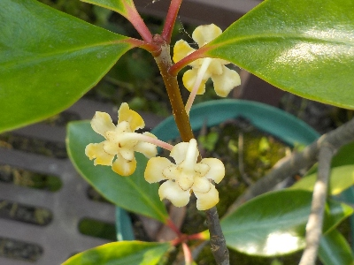
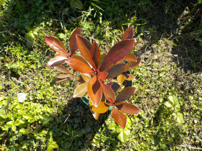
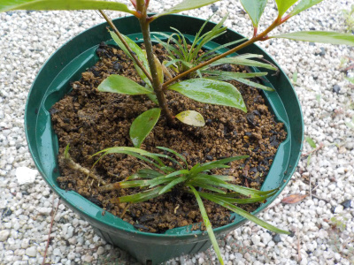
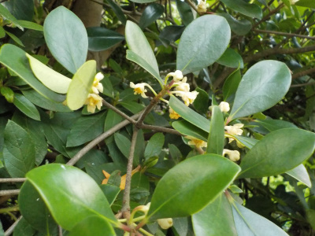
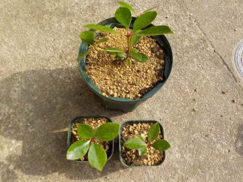
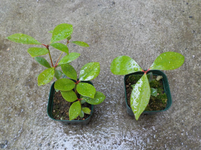
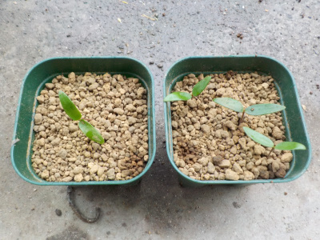
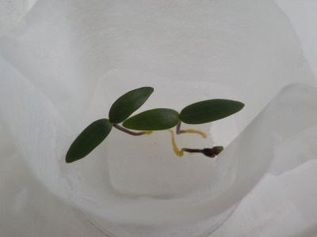
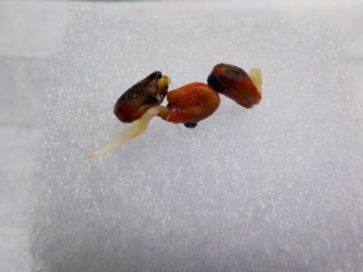
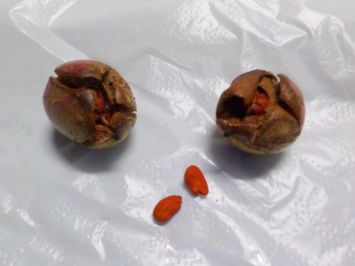

植木鉢のモッコクに花が付きました。
2025/07/05

花が小さいし下向きに咲いているので全然目立たないですが、花が咲いたのはうれしいです。
これで実が出来るともっとうれしいな。
2025/07/05

花が小さいし下向きに咲いているので全然目立たないですが、花が咲いたのはうれしいです。
これで実が出来るともっとうれしいな。
2021/11/07

モッコクは紅葉しないと思うんですが、紅葉したみたいに赤くなりました。
他にも何本かモッコクがあるんですが、赤くなったのはこの1本だけです。
病気じゃないといいんですが。
2021/08/13

何か植えてあったほうが賑やかでいいかなと、リュウノヒゲを植えました。
後々邪魔になるかもしれないですが、邪魔になったら取ればいいです。
どれくらいで鉢いっぱいに広がるでしょうね。
2021/07/11

派手ではないですが花があるのはいいですね。
2021/05/23

庭木にするつもりはないので大きくはしないですが、もうちょっと大きくなって欲しいので鉢を分けました。
1メートル以下で育てたいです。
2021/05/15

あんまり成長していないモッコクですが、大きさのわりに葉っぱが大きい。
なんかバランスが悪いです。
小さい鉢で小さく育てようと思っていましたが、もうちょっと大きい方がいいかなと最近思うようになりました。
今度大きな鉢に植替えしようと思います。
2020/04/12

お茶パックで育てていたモッコクを土に植え替えしました。
2020/02/15

モッコクの芽は緑色が濃く、草って感じじゃなく木っぽいです。
なんとなく固そう。
2020/01/26

3つ種から根が出ました。
なんか弱々しい感じです。
2019/11/30

モッコクに熟れた実が沢山付いてました。
実が割れて種が飛び出す時期のようです。
種を蒔いて育てようと思います。
種から木を育てます。